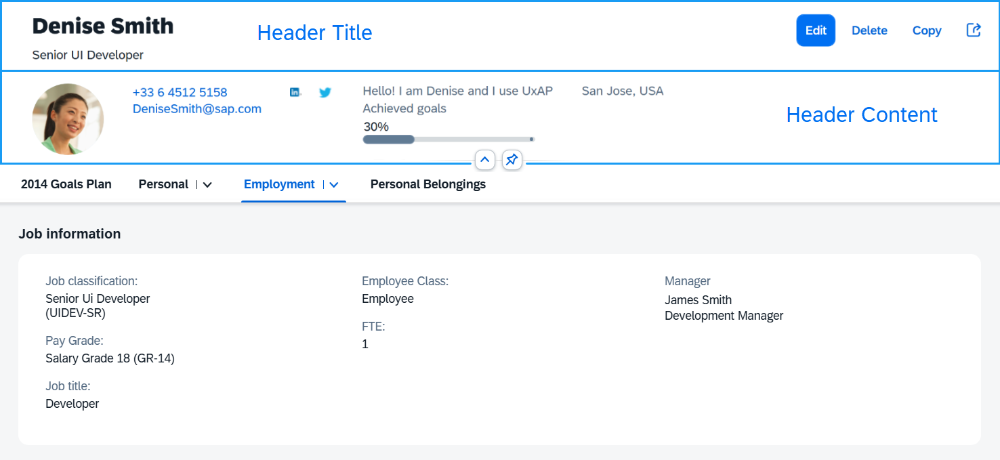
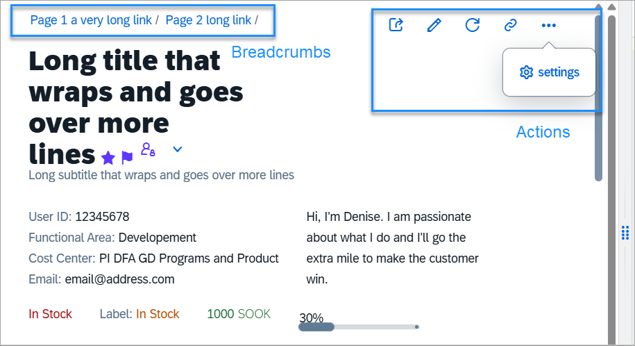

Object Page Header
sap.uxap.ObjectPageLayout's dynamic header.The sap.uxap.ObjectPage's dynamic header is flexible and provides
general-purpose aggregations that allow you to build a custom header layout.
It consists of two parts - Header Title and Header Content.

The upper part of the Header Title is reserved for breadcrumbs
navigation. The opposite side of this upper area is occupied by the
navigationActions after a certain breakpoint.

The Header Title area can be clicked/tapped to expand/collapse the dynamic header.
Whenever the feature is enabled (toggleHeaderOnTitleClick is set to
true), an arrow button is positioned either below the Header
Content (when header is expanded) or below the Header Title (when header is collapsed).
The expand/collapsed state of the header can be toggled by either clicking on the Header
Title area, or the arrow button.
When hovering over the arrow button or the Header Title area, both areas are highlighted indicating to the user that an action can be taken.

The Header Content can be pinnable (headerContentPinnable is set to
true). When the feature is enabled, a pin toggle button is
available allowing the header content to remain expanded when scrolling the page.

Header Title
To implement the dynamic header, the app developer needs to provide an instance of
the sap.uxap.ObjectPageDynamicHeaderTitle control for the
headerTitle aggregation of the
sap.uxap.ObjectPageLayout control.
The sap.uxap.ObjectPageDynamicHeaderTitle extends
sap.f.DynamicPageTitle. It can hold any control and displays
the most important information regarding the object that will always remain visible
when scrolling.
Header Content
To populate the header content area, provide an array of desired controls to the
headerContent aggregation of the
sap.uxap.ObjectPageLayout control.
sap.uxap.ObjectPageLayout uses internally
sap.uxap.ObjectPageDynamicHeaderContent to layout the
controls.
Header Features
Overview of the header features (all being ObjectPageLayout
properties):
|
Feature |
Description |
|---|---|
|
|
Determines whether the Header Content area can be pinned. When set to true, a pin button is displayed within the Header Content area. The pin button allows the user to make the Header Content always visible at the top of the page above any scrollable content. |
|
|
Determines whether the user can switch between the
expanded/collapsed states of the dynamic header by
clicking/tapping on the Header Title. If set to
|
|
|
Preserves the current header state when scrolling. For example, if the user expands the header by clicking on the title and then scrolls down the page, the header will remain expanded. |
|
|
When the feature is enabled, arrow buttons below the Header Content appear, the Header Title and the arrow buttons can be clicked/tapped for collapsing/expanding the header and there is additional visual indication while hovering over the Header Title area or the arrow buttons. |